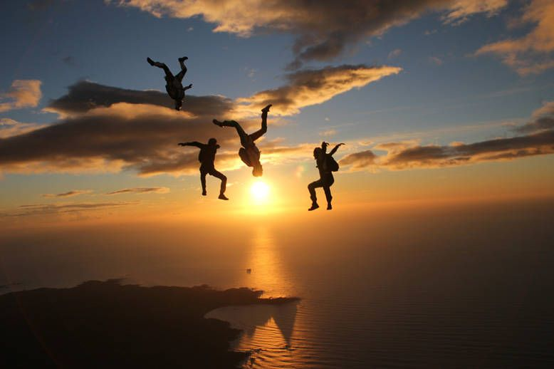

(FF) - Free-flying
This discipline is significantly different to the belly to earth
orientation experience in your AFF/FS. When free flying you will be in a
vertical orientation either Head up (HU) or Head down(HD). With the change
in orientation there is a significant change is speed - where jumps would
usually last [55secs] now only lasting MAX [45 sec] (10 secs is A LOT in
the sky!)

Requirements
- B-license, usually more the 50+ skydives and a number of other proficiencies
- (FS) rating, this shows that you have learnt to fly relative to others safely at slower speeds ie) basics are well dialed in
- Free-fly 'friendly' rig, due to high speeds rigs that are not snug fit and tight around the container can cause massive issues, such as premature openings..
- Audibles , this is an audio alti meter that sounds off at specified hieghts - again due to HIGH SPEEDS further saftey precautions are in place
How to get your (FF) rating
- Find a (FF) coach
- Get brief from coach on vertical flying orientation,safety flying with others and complete proficiency jumps. (FF) can be done headup (HU) and headdown (HD) - (HD) is consisdered very advanced and extremely difficult to learn the balance, therefore we will only be talking about (HU) headup or 'sit-flying'.
- Back-flying , you need to be able to recover from any orientation when freeflying, you will most likely fall onto your back therefore back-flying is fundamental
- nose/tail facing exits
- (HU) Flying position - the balance and technical aspects of this discipline takes time and hence why many recommend trying to FF after at least 100 skydives MINIMUM
- Fast(stand)) & slow fall(a type of almost backflying)
- Forward/stop and back/stop
- Turns L/R
- Break-off heights
- CORRECT break-off procedure - transition to back then roll to belly, checking air space
- Tracking away from group
- Learning to hold HU orientation for the entire jump is a difficult challenge that eventually becomes natural even then the slights change of body position/balance can make a massive difference! Your coach will judge you ability and awareness - this is the hardest part of achieving the rating. Once you can exit stable - turn L/R - fast fall - slow fall - forward/back - clean breakoff - you may be ready but this can take time
- Your now ready to jump with others! Its recommended to keep to 2 or 3 ways until you are comfortable flying with others and all the above becomes second nature!